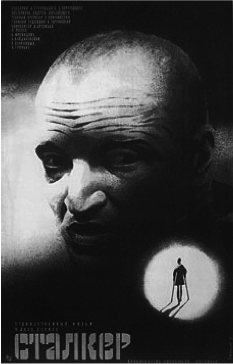
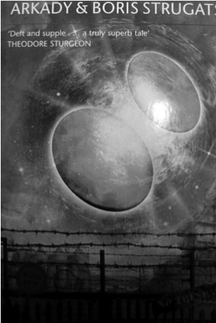
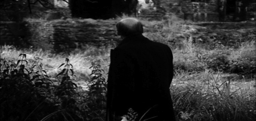
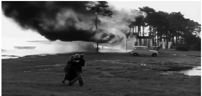

Tarkovski’nin öbür bilimkurgu şaheseri Stalker (İz Sürücü) bu her yerde-mevcut fiey’i tamamlayıcı bir karşı unsur kurgular: Bir yasak Mıntıka’nın boşluğu. Bilinmez bir kasvetli diyar, bir Mıntıka olarak bilinen bu yer 20 yıl önce arkalarında yıkıntılar bırakmış bazı gizemli yabancı varlıklarca (göktaşı, uzaylılar...) ziyaret edilmiştir. Ordu tarafından izole edilip gözetim altına alınmış bu ölümcül Mıntıka’da insanların yok olduğu varsayılır.

Stalker
İz sürücüler uygun bir paraya insanları Mıntıka’ya ve bu Mıntıka’nın ortasında bulunan ve en derin isteklerin gerçekleşeceği iddia edilen gizemli Odaya rehberlik eden maceracı insanlardır. Film böylesi bir iz sürücünün, karısı ve nesneleri hareket ettirebilen bir büyü kabiliyeti olan kötürüm kızıyla yaşayan, Mıntıka’ya biri bilimadamı öbürü yazar iki entelektüeli götüren sıradan bir adamın öyküsüdür. Sonunda oradaki odaya vardıklarında inanç eksikliğinden dolayı isteklerini dile dökmeyi başaramazlarken, iz sürücünün kendisi ise kızının iyi olması isteğine ilişkin gereken cevabı almış gibidir.

Solaris örneğinde olduğu gibi Tarkovski burada da romanın ana fikrini terse çevirir: Filmin dayandığı Strugatsky kardeşlerin romanı The Roadside Picnic’de (Yol Kenarı Pikniği) -altı adet olan- Mıntıka bir “yol kenarındaki piknikten” kalıntılara yer verir, gezegenimizde kısa süre kalıp bizi hiç de ilginç bulmadıkları için hemen terk eden uzaylı ziyaretçilerin artıklarıdır bunlar; iz sürücüler de kendilerini eziyetli bir manevi arayışa adamış kişiler olarak değil maceraperest kimseler olarak sunulmuştur. Onlar piramitleri yağmalayan şu meşhur Araplar gibi (zengin Batılılar için bir başka Mıntıka; piramitler de aslında popüler bilim literatüründe uzaylı bilgeliğinin bir ürünü değil midir?), soygunlar düzenleyen usta leşçilerdir. Mıntıka, kişinin kendi hakikatiyle yüzleştiği (ya da bu hakikati yansıttığı) salt ussal bir fantazmatik alan değil, (Lem’in romanındaki Solaris gibi) bir maddi varlık, evrenimizin yasa ve kurallarına uymayan bir mutlak Ötekiliğin Gerçek’idir. (Bundan dolayı, romanın sonunda kahramanın kendisi “Altın Küre” ile karşılaştığında -filmde arzuların gerçekleştiği odaya romanda bu ad verilmiştir-, bir tür tinsel değişim geçirir, fakat bu deneyim Lacan’ın “öznel yoksunluk” olarak adlandırdığı şeye, toplumsal bağlarımızın tamamen anlamsız olduğunun aniden farkına varılmasına, gerçeklikle bağımızın kopmasına daha yakındır. Birdenbire insanlar gerçek olmaktan çıkar, gerçekliğin kendisi seslerin ve şekillerin seçilemediği bir girdap gibi deneyimlenmeye başlar ve arzularımızı formülleştiremez hale geliriz...). Hem Solaris’te hem de Stalker’da Tarkovski’nin “idealist mistifikasyonu”, bu anlamsız Şey’in radikal Ötekiliği ile radikal bir şekilde yüzleşmekten, bu yüzleşmeyi Şey aracılığıyla kişinin kendi Hakikat’ine yönelik “içsel bir yolculuğa” indirgeyerek/çevirerek kaçınması anlamına gelir.
Romanın adının ima ettiği bizim kendi evrenimizle yabancı evren arasındaki uyumsuzluktur: Mıntıkada bulunan insanları hayran bırakan garip nesneler büyük olasılıkla tıpkı ana yolun kenarındaki bir ağaçlıkta durup piknik yapan birtakım insanların bıraktıkları çöpler gibi gezegenimizde kısa süre kalan yabancıların bıraktığı atıklar, çöplerdir... Dolayısıyla, tipik Tarkovskici manzara (yarısı doğa tarafından kaplanmış çürüyen insan kalıntıları) Mıntıka’nın romandaki yabancı konukların (olanaksız) bakış açısından tanımlanmasına tekabül eder: Bizim için Mucize olan, kavrayamayacağımız olağanüstü bir evren ile karşılaşmamız, Yabancılar için sadece gündelik kalıntılardır. Öyleyse, tipik Tarkovskici manzaranın (insana ilişkin çevrenin doğa tarafından yeniden ele geçirilmesinin) evrenimizin muhayyel bir Uzaylı konumundan görülmesine ilişkin olduğu yönünde bir Brechtci çıkarımda bulunmak mümkün müdür? Buradaki piknik Hanging Rock’takinin ekstrem karşıtıdır: Bir Pazar pikniğinden yasaklı bir Mıntıka’ya sızmayız, Mıntıka’nın kendisi bir Uzaylı pikniğinin ürünüdür...
Tarihe karışan Sovyetler Birliği’nde bir vatandaş için yasak Mıntıka kavramı (en azından) beş çağrışım yapmaktaydı: Mıntıka (1) Gulag’dır, yani ayrı bir hapishane bölgesi; (2) Çernobil gibi teknolojik (biyokimyasal, nükleer...) bir facia ile zehirlenmiş ya da oturulamaz hale gelmiş bir bölgedir; (3) nomenklatura’nın yaşadığı ayrıcalıklı bölgedir; (4) giriş çıkışın yasaklandığı yabancı bölgedir (Demokratik Alman Cumhuriyeti’nin ortasından duvarla çevrilmiş Batı Berlin gibi); (5) bir göktaşının düştüğü bölgedir (Sibirya’daki Tunguska gibi). Mesele tabii ki, “O halde mıntıkanın gerçek anlamı nedir?” sorusunun yanlış ve yanıltıcı olmasıdır: Esas olan, sınırın ötesindeki şeyin belirlenemezliği ve bu boşluğu önceden dolduran farklı pozitif içeriktir.

Stalker
Stalker, gündelik gerçekliğimizi fantazmatik alandan ayrıştıran bu Sınır’ın çelişik mantığına mükemmel bir örnektir. Stalker’da bu fantazmatik alan gizemli “mıntıka”, içinde imkânsızın olduğu, gizli arzuların gerçekleştiği, gündelik gerçeklik düzeyinde henüz icat edilmemiş teknolojik araç gereçlerin bulunduğu vb. yasak bölgedir. Yalnızca tehlikeyi göze almaya hazır sabıkalılar ve maceraperestler bu fantaz-matik Ötekilik alanına geçebilirler. Tarkovski’nin materyalist yorumunda, Sınır’ın kurucu rolünde ısrar etmek gerekir: Bu gizemli Mıntıka sıradan gerçekliğimizle aynıdır aslında; ona gizemli bir atmosfer katan Sınırın kendisidir, örneğin Mıntıka erişilmez, yasak olarak tayin edilmiştir. (Kahramanların en sonunda gizemli Oda’ya girip ilgi çekici veya özel hiçbir şeyin olmadığını fark ettiklerine hiç şaşırmamak gerekir - İz Sürücü bu haberi Mıntıka dışındaki insanlara aktarmaması için onlara yalvarır, böylece insanlar tatminkâr illüzyonlarını sürdürmüş olurlar.) Kısaca, tutucu mistifikasyon burada nedenselliğin asıl yapısını tersine çevirme faaliyetidir: Mıntıka, gündelik gerçeklik anlayışımıza “çok fazla” gelen bazı özellikleri olduğu için yasaklanmamıştır, tam da gündelik gerçekliğe özgü bazı şeyleri sergilediği için yasaklanmıştır. Öncelikle bu gerçeğin bir kısmı gündelik gerçekliğimizden biçimsel olarak dışlanır ve bir yasak bölge ilan edilir.15 Tarkovski “bana sık sık Mıntıka’nın neye tekabül ettiği sorulur. Olabilecek tek yanıt var: Mıntıka yok. İz Sürücü’nün kendisi kendi Mıntıka’sını icat etmiştir. Çok mutsuz bazı kişileri buraya getirerek onlara umut fikrini aşılayabilmek için bunu o yaratmıştır. Arzular odası da aynı şekilde İz Sürücü’nün icadıdır, maddi dünyaya karşı bir başka provokasyondur. İz Sürücünün zihninde biçimlenen bu provokasyon bir inanç meselesidir”16 diye açıklar. Hegel, görünümlerin perdesi ardındaki mantıkdışı dünyada hiçbir şey olmadığını, yalnızca öznenin bu perdeye bakarken kendi zihninden yansıttığı şeylerin var olduğunu vurgular...
Öyleyse Mıntıka (Stalker’daki) ile Solaris gezegenini karşıtlaştıran nedir? Lacancı terimlerle bu zıtlığı açıklamak kolaydır elbette: İki aşırı ucun zıtlığı, simgesel ağ üzerinde Dolgunun aşırılığı (bu ağda bir Şey’e yer yoktur, onu ele geçirmek imkânsızdır) ve (boş) bir Yerin dolgu üzerinde, onu dolduran unsurlar üzerinde arz ettiği aşırılık (Mıntıka simgesel bir bariyerle kurulan/tanımlanan bir yapısal boşluktur tam olarak: Bu bariyerin ardında, Mıntıka’da hiçbir şey yoktur ve/veya Mıntıka’nın dışındakilerin aynıları vardır). Bu karşıtlık, dürtü ile arzu arasındaki karşıtlıktır: Solaris, yani Şey, kör libidonun cisimlenmesi iken Mıntıka arzuyu yaşatan boşluktur. Mıntıka’nın ve Solaris’in öznenin libidinal ekonomisine farklı biçimde yansıması da gene bu karşıtlık yüzündendir: Mıntıka’nın ortasında, “arzular odası”, öznenin içeri girdiği takdirde arzularını-isteklerini yerine getirebileceği yer olsa da, Şey-Solaris kendisine yaklaşan öznelere arzuları değil, fantazilerinin travmatik çekirdeğini, gündelik yaşamlarında direndikleri ve jouissance ile ilişkilerini içeren sinthomu verir.
Dolayısıyla, Stalker’daki blokaj Solaris’teki blokaja karşıttır: Stalker’da blokaj (bizim gibi, yozlaşmış, tartıp biçen, inançsız çağdaş insanlar için) saf inanca, doğrudan arzulamaya ulaşmanın olanaksızlığıyla ilgilidir - Mıntıka’nın ortasındaki oda boş kalmak zorundadır; içeri girdiğinizde dileğinizi belli edemezsiniz. Solaris’te ise aşırı doyum sorunu vardır: Dilekleriniz siz onları daha düşünmeden maddileşir/gerçekleşir. Stalker’da masum dilek/inanç saf bir düzeyde asla ulaşılamaz, ele geçirilemezken Solaris’te fantazileriniz/hayalleriniz sorudan önce gelen yanıtın psikotik yapısında açığa çıkmaktadır. Stalker, inanç/iman sorunu üzerine odaklanır: Oda, arzuları yerine getirir ama yalnızca, tereddütsüz inananların arzularını - bu nedenle üç maceracı odanın eşiğine ulaştığında içeri girmeye çekinirler, çünkü asıl arzularının/dileklerinin ne olduğundan tam olarak emin değildirler (birinin dediği gibi Oda’nın olayı, istediğini sandığın şeyi değil farkında olmadan istediğin şeyi yerine getirmesidir). Şu haliyle Stalker, Tarkovski’nin son iki filmi Nostalgia ve Sacrifice’daki (Kurban) temel meseleye işaret eder: Saf inancın masumiyetine ulaşmak için hangi fedakârlık veya sıkıntılardan geçmek gerektiği sorusu. Sacrifice’ın kahramanı Alexander geniş ailesiyle İsveç’in ücra bir köy evinde yaşamaktadır (Tarkovski’nin kahramanlarının saplantısı olan tipik Rus daçasının bir başka versiyonu). Doğum günü kutlamaları, alçaktan uçan jetlerin süper güçler arasında bir nükleer savaşın başladığını bildirmesiyle bozulur. Alexander çaresizlik içinde Tanrı’ya yakarır ve savaşın sona ermesi adına kendisi için en değerli şeyi Tanrı’ya sunar. Savaş “olmaz” ve filmin sonunda Alexander adak eylemi olarak sevgilisinin evini yakar ve akıl hastanesine götürülür...

Sacrifice
Dünyevi hayatımıza anlam katan bu saf, mantıksız eylem motifi, Tarkovski’nin yurtdışında çektiği son iki filminin odağında yer alır; her ikisinde de aktörler bu eylemi gerçekleştirirler. Erland Josephson, ihtiyar budala Domenico olarak Nostalgia’da kendini herkesin içinde tutuştururken Sacrifice’ın kahramanı ise en değerli varlığını, “kendinden içre” olan evini yakar.17 Bu mantıksız fedakârlıklar, obsesif-nevrotik dürtüsel eylemin tüm hakkını verir: Eğer ben bunu (fedakâr davranış) sergiliyorsam, bu facia (Sacrifice’da atom savaşıyla gelen dünyanın sonu) gerçekleşmeyecek veya geri alınacaktır. “Eğer böyle yapmazsam (şu taşın üstünden iki kere atlamazsam, ellerimi şöyle koymazsam, vs) kötü bir şey olacak” mealindeki dürtüsel jesttir bu. (Bu dürtüsel fedakârlığın çocuksu-luğu, Nostalgia’da açıkça görülür; kahraman, ölmüş Domenico’nun buyruğuna göre dünyayı kurtarmak için yarısı boş bir havuzdan elinde mumla geçer...) Psikanalizden bildiğimiz gibi, burada söz konusu olan açığa çıkmasından korktuğumuz katastrofik X jouis-sance’dan başka bir şey değildir.
Tarkovski, bir fedakârlığın işe yaraması, etkili olabilmesi için bir anlamda “anlamsız” olması, “mantıksız” bir davranış olması, yani bir boşa harcama veya ritüel (boş havuzu elinde mumla geçmek veya kendi evini yakmak gibi) olması gerektiğini gayet iyi bilir; buna göre yalnızca kendiliğinden böyle bir şey “yapıyor” olmak, herhangi bir mantıklı düşünceye dayanmayan bir davranış, modern ruh hastalığımızdan bizi kurtarıp iyileştirecek, dolaysız inanca kavuşturacaktır. Tarkovskici özne burada, büyük Öteki’yi getirecek araç olarak bizzat kendi kastrasyonunu sunar (mantık ve egemenliği reddederek çocukça bir “ahmaklığa” gönüllü olarak tenezzül etme, mantıksız bir ritüele teslim olma): Özne yalnızca tamamen anlamsız ve “akıldışı” bir eylemde bulunarak, evrenin kendi içine nüfuz etmiş derin küresel anlamını muhafaza edebilecektir.
Burada önemli olan, Sacrifice’ın en sonunda feda edilen (yakılan) nesnenin Tarkovskici fantazmatik alanın nihai nesnesi, Ev’in otantik kırsal kökenlerini ve güveni temsil eden ahşap daça olmasıdır; yalnızca bu nedenle bile Sacrifice Tarkovski’nin son filmi olmayı hak eder.18 Bu, her şeye rağmen bir tür Tarkovskici “fantazinin çaprazlaması”yla, tam formülüne Solaris’in ve Nostalgia’nın sonundaki nihai fantazmatik birliktelikle ulaşan bir tuhaf kırın (gezegenin yüzeyi, İtalya) ortasında sihirli bir biçimde ortaya çıkan ana unsurdan feragat etmek anlamına mı gelir? Hayır, çünkü bu vazgeçiş, hayata tinsel anlamını geri kazandıracak kurtarıcı eylem olarak, büyük Öteki’nin hizmetinde işlevsel hale getirilmiştir.
Tarkovski’yi ucuz dinsel tutuculuğun üstüne çıkaran, bu fedakârlık eylemini, acıklı ve ciddi “büyüklüğünden” yoksun bırakıp beceriksiz, gülünç bir eyleme dönüştürmesidir (Nostalgia’da Domenico kendisini öldürecek ateşi yakmayı beceremez, yoldan geçenler alevler içerisinde bedenine aldırmaz; Sacrifice, kahramanı akıl hastanesine götürmek için peşinden koşan adamların sahnelediği komik bir baleyle biter -sahne adeta bir ebeleme oyunu gibi çekilmiştir).
Fedakârlığın bu gülünç ve beceriksiz yönünü, gündelik işlerin arasında koşuşturan ve eylemin trajik büyüklüğünü takdir edemeyen insanlara nasıl görünmesi gerektiğine dair bir işaret olarak okumak her şeyi basite indirgemek olur. Tarkovski burada daha ziyade, en tipik örneği Dostoyevski’nin aynı adlı romanından alınma eski Rus “budala” geleneğini sürdürmektedir: Tarkovski’nin espriden ve şakadan arınmış bütün filmlerinde alaycılık ve hicvi yalnızca en kutsal davranışları ve en üst düzeydeki fedakârlıkları anlatan sahnelere saklaması tipiktir (Andrei Rublev’deki meşhur çarmıha gerilme sahnesi de böyle çekilmiştir: Kötü aktörlerin gülünç derecede acıklı rolleriyle, sel gibi akan göz yaşlarıyla bu sahne kara kışı yaşayan bir Rus kırına aktarılmıştır).19
Öyleyse bu, Althusserci terimlerle ifade edersek, Tarkovski’nin sinematik dokusunda kendi ideolojik projesini baltalayan bir boyut olduğunu mu gösterir, yoksa bununla arasına bir mesafe koyarak özündeki imkânsızlığı ve başarısızlığı mı ortaya serer?
Nostalgia’da Pascalcı bir atıf içeren bir sahne de vardır: Eugenia, Madonna del Parto onuruna basit köylü kadınların bir kilisede düzenlediği törene şahitlik eder - azizeye anne olma dileklerini iletmekte, evliliklerinin doğurganlıkla taçlanması için dua etmektedirler. Şaşkına düşen Eugenia anneliğin çekiciliğini anlamaktan uzak olduğunu kabul ederek töreni izleyen papaza inançlı biri olmak için ne gerektiğini sorar, papaz şöyle yanıtlar: “Diz çökerek başlamalısın” - Pascal’ın meşhur “Diz çök ki geri zekâlı olasın”ına yönelik (sahte entelektüel gururdan mahrum kalırsın) açık bir atıftır bu. (Ne ilginç ki Eugenia bunu dener ama yarı yolda bırakır: Dışsal bir jest olarak bile diz çökemez.) Burada Tarkovskici kahramanın çıkmazıyla karşılaşırız: Nostalji eksikliğinden, boğucu bir varoluş çaresizliğinden dolayı naif tinsel kesinlikten kopmuş günümüz entelektüelinin (en iyi örneği Nostalgia’nın kahramanı Gortçakov) dolaysız dinsel teslimiyete geri dönmesi ve bu kesinliğe yeniden ulaşması mümkün müdür? Başka deyişle, koşulsuz iman gereksinimi, onun kurtarıcı gücü, tipik çağdaş bir sonuca, özel içeriğine karşı ilgisiz, biçimsel imanın kararcı edimine, yani, inanma olgusunun neye inandığımızdan önemli hale geldiği, Schmittci politik kararcılığa, bir tür dinsel karşı konuma götürmez mi? Ya da daha kötüsü, bu koşulsuz iman mantığı sonuçta aşkı sömüren kötü şöhretli papazeffendi Sun Myung Moon paradoksuna götürmez mi? Herkesin bildiği gibi, papazefendi Moon, kendi tarikatının evli olmayan üyeleri arasından rasgele karı koca seçip ulvi Kozmik Düzenin işleyişi açısından nadide anlayışıyla kararlarını meşrulaştırırken, şeylerin ebedi düzeninde kaderinize yazılmış eşinizi tanıyabildiğini iddia eder ve tarikatının bir üyesine henüz evleneceğini bilmediği kişiyi (kural olarak dünyanın başka bir yerinden) mektupla bildirir - böylece Slavlar Korelilerle, Amerikalılar Hintlilerle vs. evlenir. Tabii asıl mucize, bu blöfün işe yaramasıdır; koşulsuz bir güven ve iman varsa, dışsal bir otoriteye bağlanma kararı en mahrem tutkulu bağla birbirine bağlı âşık çift üretebilir. Niçin? Aşk “kör”, olumsal, açıkça görülmez özelliklere dayandığından, ne zaman âşık olacağımı belirleyen, şu kavranması olanaksız je ne sais quoi, yine kavranması olanaksız bir otoritenin kararıyla büsbütün dışsallaştırılabilir.
Tarkovskici fedakârlıkta sahte olan nedir? Daha da önemlisi, fedakârlık nedir? Fedakârlığın birinci nosyonu takastır: Ötekine benim için değerli olan bir şeyi vererek ondan benim için daha gerekli olan bir şeyi alırım (“ilkel” kabileler hayvanları, hatta insanları kurban ederler ki tanrı onlara yeterince yağmur, askeri zafer vs. göndersin). Bir sonraki karmaşık düzey ise kurban verdiğimiz Öteki’yle doğrudan kârlı bir alışverişi hedeflemeyen bir dolaysız jesttir. Daha temel hedef, kurban ettiğimizde yakarışlarımıza cevap verecek (ya da vermeyecek) bir Öteki’nin var olduğunu belirlemektir. Dileğimi yerine getirmese bile, belki bir gün, bir dahaki sefere farklı yanıt verecek bir Öteki’nin varlığından en azından emin olurum. Başıma gelebilecek tüm facialar dahil, dışarıdaki dünya anlamsız ve kör bir makine değildir, aksine belirli bir diyaloğu mümkün kılan partnerdir, böylece bir facia, kör talihin krallığı olarak değil, anlamlı bir yanıt olarak okunabilir. Bu noktada Lacan bir adım daha ileri gider. Genellikle Lacancı psikanalizle bağdaştırılan fedakârlık nosyonu büyük Öteki’nin iktidarsızlığının inkarını sağlayan bir jesttir. En temelde, kişi kendisine çıkar sağlamak için değil Öteki’ndeki eksiği doldurmak, Öteki’nin büyüklüğünü ya da en azından tutarlılık görüntüsünü sürdürmek için fedakârlıkta bulunur. 1938 yapımı klasik Hollywood macera melodramı Beau Geste’yi, şefkatli teyzeleriyle yaşayan üç erkek kardeşten en ihtiyarının (Gary Cooper), teyzesine ait olan oldukça pahalı bir elmas kolyeyi bir aşırı vefasızlık ve acımasızlık örneği olarak çaldığı ve ortadan kaybolduğu filmi hatırlayalım. Bütün itibarının sona erdiğini, hayırsever bir kadın tarafından belki sonsuza dek kötü bir hırsız olarak bilineceğini bilmesine rağmen niçin böyle bir şey yapmıştır? Filmin sonunda, bunu kolyenin sahte olduğunun utanç verici bir şekilde anlaşılmasını önlemek için yaptığını anlarız. Ailenin içerisinde, teyzesinin uzun süre önce aileyi iflastan kurtarmak için hakiki elması zengin bir maharaja sattığını ve bunun yerine değersiz bir sahtesini koyduğunu bilen tek kişi odur. Hırsızlık öncesinde elmasın ortaklarından olan uzaktan akraba bir amcasının kolyeyi maddi çıkar için satmak istediğini öğrenmiştir. Kolyenin satıldığı durumda sahte olduğu şüphesiz ortaya çıkacaktır; dolayısıyla teyzenin ve ailenin şerefini korumanın tek yolu bu hırsızlığı yapmaktır. Suçun mazereti aslında nihai olarak ortada çalınacak bir şeyin olmadığı gerçeğini gizlemektir. Bu şekilde Öteki’deki kurucu eksik örtülür, yani Öteki’nin kendisinden çalınmış şeye sahip olduğu illüzyonu sürdürülmüş olur. Aşkta, kişi sahip olmadığı şeyi veriyorsa eğer, dolayısıyla aşk hırsızlığında da kişi Öteki’den onun sahip olmadığı bir şeyi çalar. İşte filmin başlığındaki “beau geste”nin [güzel bir jest] üstü kapalı söylediği budur. Burada fedakârlığın anlamı gizlidir: Kişi kendini Öteki’nin görüntüsünü korumak, sevilen Öteki’yi utançtan (onun onurunu ve toplumdaki saygın istikbalini) kurtarmak için feda eder .
Fakat Lacan’ın fedakârlığı sahici olmamakla eleştirmesi, fedakâr jestin sahteliğini bir başka boyuta taşır. Jeannot Szwarc’ın Enigma’sını (1981) düşünelim mesela: Soğuk savaş ajanları ana teması etrafında John le Carrevari sanatsal tarafları olan bir macera filmi (ajan, bir görev için soğuk savaşın yoğun yaşandığı bir bölgeye gönderilir; düşman topraklarında ihanet suçlamasıyla yakalandığında aslında birileri tarafından feda edildiği gerçeği kafasına dank eder, operasyonun gerçek amacına ulaşabilmesi için görevinin başarısızlığı en başından beri üstleri tarafından planlanmıştır - diyelim ki KGB’nin Batı’nın gerçek köstebeğinin kimliğini saklı tutması). Enigma’da Batı’ya göç etmiş ajan-dönek-aykırı muhabir CIA tarafından işe alınmış ve KGB merkezi ileri karokollar arasındaki haberleşmeyi okuyan bilgisayar çipini ele geçirme mücadelesini kazanmak için Doğu Almanya’ya gönderilmiştir. Fakat ufak tefek alametler ajana göreviyle ilgili bir şeylerin yanlış gittiğini anlatır -örneğin Doğu Almanyalılar ya da Ruslar onun geleceğini önceden haber almışlardır- acaba neler dönmektedir? CIA merkezinde Komünistleri haberdar eden bir köstebek mi vardır? Filmin sonuna doğru öğrendiğimize göre çok daha ince bir taktik söz konusudur: CIA uğruna itişip kakışılan çipi zaten ele geçirmiş, fakat şansızlık bu ya, Ruslar durumdan şüphelenerek gizli iletişimlerinde bu bilgisayar ağını kullanmayı bir süreliğine durdurmuşlardır. CIA için operasyonun gerçek amacı çipi ele geçirmek için bir ajan yollayarak çipin kendilerinde olmadığını Rusları inandırmak ve aynı zamanda da çipi ele geçirmeye yönelik bir operasyonun olduğunu kasıtlı olarak Ruslara bildirmektir. CIA tabii Rusların ajanı mutlaka tutuklayacakları düşüncesine güvenmektedir. Dolayısıyla nihai sonuç, Amerikalıların operasyonu başarıyla durdurarak Rusları aslında çipe sahip olmadıklarına ve haberleşme ağının tehlikesizce kullanılabileceğine inandırmaktır. Öykünün trajik özelliği ajanın görevinin başarısız olacağının önceden bilinmesidir: CIA görevin başarısız olmasını ister. Zavallı ajan, karşı tarafın sırrına sahip olunmadığını kanıtlamak için baştan feda edilmiştir. Buradaki strateji, Öteki’yi (düşman) aradığı şeye sahip olunmadığına inandırmaktır.
Fakat Enigma örneğinde kaşılaştığımız şey aslında bir kayıp numarası yapmanın terse çevrilmiş yapısıdır. Simgesel Yasa, Öteki’ye jouissance’ı yasakladığı için özneye haz verebilecek tek yol, jouissance’ı sağlayan nesneden yoksun olma numarası yapmak ve onu çaresizce ararmış gibi yaparak Öteki’nin bakışından saklı tutmak. Bu, fedakârlık sorunsalına da yeni bir bakış getirir: Kişi Öteki’nden bir şey elde etmek için değil Öteki’yi kandırmak, onu bir şeylerden yani jouissance’dan hâlâ yoksun olduğuna onu inandırmak için bunu yapar. Bu sebeple obsesifler fedakârlık ayinlerini tekrar tekrar sahneleme zorunluluğu hissederler: Öteki’nin gözünde, jouissance’ı men etme zorunluluğu. Ve farklı bir düzeyde aynı şey, kadının fedakârlığı olarak adlandırılan, kadının gölgede kalmış rolü ve kendini kocası ya da ailesi adına feda etmesinde de tezahür etmez mi? Bu fedakârlık da Öteki’ni kandırması bakımından sahte değil midir? Fedakârlık sayesinde aslında sahip olunmayan şeyin çok istendiğine inandırılmak. Tam da bu anlamda fedakârlık ve kastrasyon birbirine zıttır: Fedakârlık isteği, kastrasyonu kabul etmeyle bağlantılı olmak bir yana onu görmezlikten gelmenin incelikli bir biçimidir, adeta kişinin gerçekten gizli bir cevhere sahip olduğunu, ve bu cevherin onu bir sevgi nesnesi haline getirdiğini sahneye koymaktır.20
Lacan “Anksiyete Üzerine Seminer” başlıklı, yayımlanmamış bir metninde (1962-63, 5 Aralık 1962 dersi) Öteki’yi yetersiz ya da yasaklı kılan temel eksiklikle ilgili isterik anksiyete türünü tanımlar: İsterik (nevrotik), kendi kastrasyonundan geri kalmayan kimsedir (bir psikotik ya da sapık değildir: kastrasyondan geçtiğini kabullenir), kendini “işlevsel” hale getirmek, Öteki’yle ilgili göreve dahil olmak istemez. Başka deyişle, alıkoyduğu şey “ötekinin eksikliğini duyduğu şeyi kendi geçirdiği kastrasyonla özdeşleştirmek”, yani Öteki’nin işlevini teminata alan pozitif içeriği ve Şey’i kastrasyon nesnesi haline getirmektir. (İsteriğin aksine sapık kişi, kendini feda etme rolüne, örneğin Öteki’nin eksiğini dolduran nesne-enstrüman rolüne dünden razıdır. Lacan’ın belirttiği gibi sapık “bir vefa duygusuyla kendini ötekinin jouissancesı’na kurban eder”) Fedakârlığın sahteliği, altta yatan öngörüde gerçekten sahip olunan, içeride tutulan Öteki tarafından imrenilme ve bir eksikliği doldurma vaadinde düğümlenir. Elbette, yakından bakıldığında, isteriğin reddetmesinde de bir muğlaklık söz konusudur: Ben içimdeki agalmayı -paha biçilmez, gizli mücevheri- feda etmek istemiyorum, çünkü feda edilecek bir şey yok, çünkü senin eksiğini doldurmaya haiz değilim.
Lacan’a göre psikanalizin nihai amacı, özneyi önemli ve gerekli bir fedakârlığı yapacak hale getirmek (“simgesel kastrasyonu kabullenmek”, çocuksu narsisist bağları koparmak vs.) değil fedakârlığın korkunç cazibesine direnmektir - elbette bu cazibe süperegonun cazibesinden başka bir şey değildir. Fedakârlık, süperegonun imkânsız emri tarafından empoze edilen suçluluk duygusunu telafi amaçlı bir jesttir en nihayetinde (Lacan’ın ortaya attığı “acayip tanrılar” süperegonun bir diğer adıdır). Tarkovski’nin son iki filminin sorunsalı bu minvalde saptanabilir: Her ikisi de fedakârlık üzerine odaklanmış, sahte ve yanıltıcıdır. Şüphesiz Tarkovski’nin kendisi böylesi bir sıfatı kabul etmese de son dönem Tarkovskici kahramanların hissettikleri içtepi anlamsız bir fedakârlık jestini başarıyla yerine getirir ki bu da en saf haliye süperegonun alanıdır. Bunun nihai kanıtı, bu jestin bir hayli “irrasyonel” biçimde anlamsız karakterinde yatmaktadır: Süperego haz alınmasına karşı çıkan bir buyruktur ve Encore seminerinin ilk dersinde Lacan’ın belirttiği gibi jouissance en nihayetinde “hiçbir şey”e hizmet eden şeydir.21
15 Buradaki mantık British Havayolları’nın economy class’ta business class’ın sahte bir taklidini yapmasıyla benzer değil mi? Bir kaç yıl önce basit bir kağıt peçete, ıslak havlu diye tepsilere dizilmiş ve maşayla tutularak bana verilmişti. Daha küçük uçaklarda da business ve economy class arasındaki sınır genelde tamamen semboliktir, örneğin bir perdeyi taşıyan düzenek business class’ın satışlarına göre ileri veya geri itilir.
16 de Vaecque, Andrei Tarkovski, 110.
17 Burada Lars von Trier’in Breaking the Waves (Dalgaları Aşmak) filmiyle bir bağlantı kurulabilir. O da kadın kahramanın feda edilmesiyle ilişkilenir. Kadın eğer tekneye o saldırgan denizciyle giderse ve adamın onu belki de ölünceye kadar dövmesine izin verirse bu kendini feda etme kötürüm kocasını iyileştirecektir.
18 Tarkovski ve David Lynch’in evrenlerinden daha farklı iki evren daha hayal etmek ne kadar zor olsa da ilginçtir ki onlar arasında belirli görsel, vs. sinthome’lar düzeyinde bağ kurmak olası ve yararlıdır: Hem Sacrifice’ın ve hem de Lost Highway (Kayıp Otoban)ın sonunda tahta bir ev yanar! Tabii ki bu eylemlerin karşıt anlamları vardır: Tarkovski için ev bir yuvanın gerçek güvenliğine tekabül ederken, Lynch’teki ev ise acayip bir suç ve jouissance’ın nihai yeridir.
19 De Vaecque, Andrei Tarkovski, 98.
20 Burada Le Carre’den bahsetmek tesadüfün çok ötesinde, çünkü mükemmel ajan romanlarında tekrar tekrar aşk ve ihanetin bağlantısına dair aynı temel senaryoyu kullanır. Bu iki terim birbirine karşıt olmaktan çok uzaktır, birine ihanet etmek karşındakini sevmenin nihai bir ispatıdır. Aşk uğruna ihanet, fedakârlığın en ileri biçimi değil midir?
21 Önemli bir yanlış anlamayı önlemek için, fedakârlık jestini sahtelik olarak reddetmemizin sebebinin onu bir takım gizli “patolojik” motivasyona indirgemek olmadığını söylemek zorundayız. Gerçek psikanaliz, bir eylemin etik güzelliğini, onun yaygın nedenlerini ortaya çıkararak “bozmanın” tam da tersiyle ilişkilenir; Lacan’a göre, düzgün bir eylem kesinlikle açıklanamaz olan bir jestir, “tarihsel (ya da toplumsal ya da psikolojik) bağlamı” içinde hesaba katılabilir, çünkü bir “bağlam” olarak sayılan şeyin tam da dış hatlarını geriye dönük olar yeniden tanımlayan, “hiç yoktan” çıkan bir müdahaleye tekabül eder. Dolayısıyla Mary Kay Letourneau’nki (on dört yaşındaki öğrencisiyle tutkulu bir aşk ilişkisinden dolayı içeri atılan otuz altı yaşındaki okul öğretmeni, seksin hâlâ otantik toplumsal bir ihlalle ilişkilendiği zamanımızın büyük aşk hikâyelerinden biri) gibi bir jestle karşılaştığımızda, psikanalizin işi bu eylemi öznenin nihai olarak sorumlu olmadığı asıl olarak bilinçdışı bazı mekanizmaların sonucu olarak açıklamak değil, tam da tersine bu eylemin kadrini korumaktır.